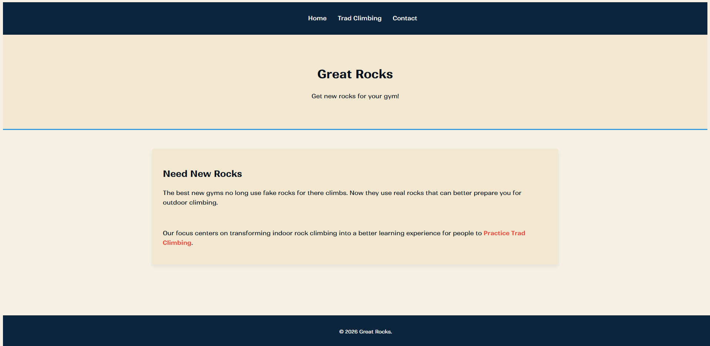
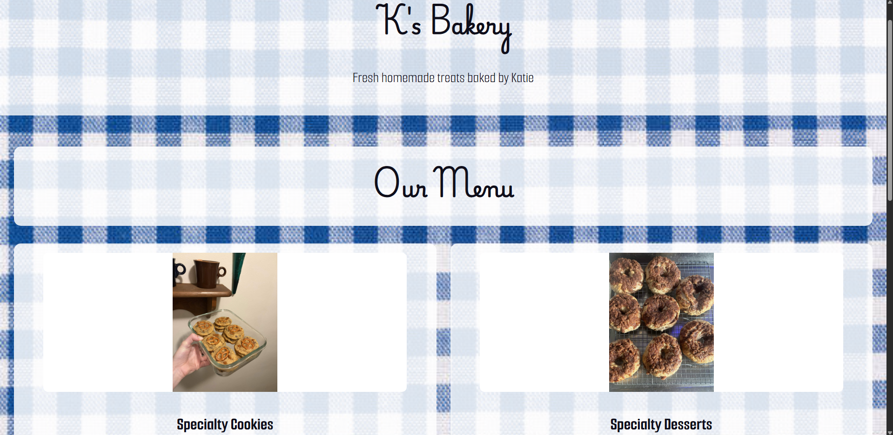

Card Sale Website
For a project in IST 250, I created an imaginary situation in which I would have to sell a prized possession of mine. I settled on Pokémon cards.
CODING PROJECTS
Various websites I have made in my IST 250 class at Penn State. Each project is available to open, but you must use the back arrow to return to the main portfolio website.
For a project in IST 250, I created an imaginary situation in which I would have to sell a prized possession of mine. I settled on Pokémon cards.

A simple website with information about rocks, made alongside my partner, Aidan Carr. Aidan completed most of the HTML while I completed most of the CSS.

A simple menu-focused website created for an imaginary bakery, avilable in desktop, tablet and mobile sizes.
Programs and Skills used: